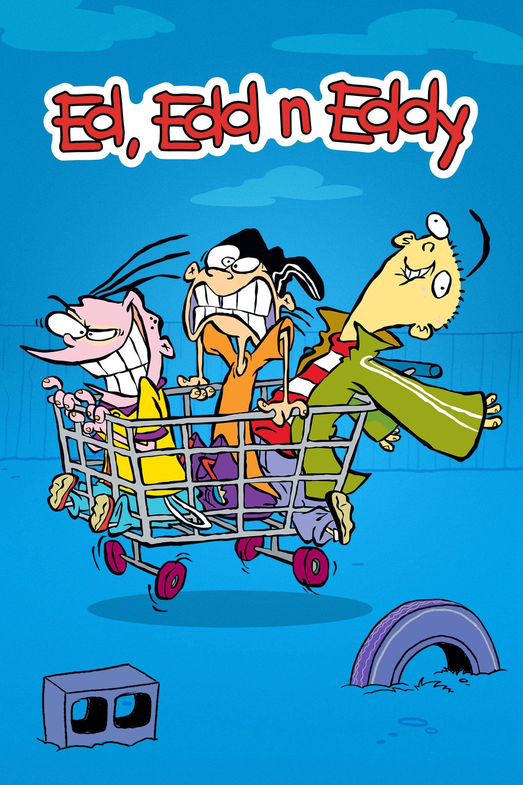

Cartoons hold a special place in our hearts, bringing back memories of carefree days spent in front of the TV, laughing at silly characters and learning life lessons in the most colorful ways.
Cartoons are a form of visual storytelling that use animated characters and exaggerated expressions to entertain, educate, or convey messages to audiences of all ages. They often combine humor, creativity, and vivid imagery to capture attention and evoke emotions. From classic hand-drawn animations to modern digital series, cartoons have played a significant role in popular culture, shaping childhood memories and even influencing social commentary. Whether in the form of short comic strips, television shows, or full-length films, cartoons remain a powerful medium for imagination and expression.

Cartoons are animated illustrations that bring characters and stories to life through motion and sound. They are widely enjoyed for their colorful visuals, playful narratives, and the ability to simplify complex ideas in a fun and engaging way. While often associated with children's entertainment, cartoons also appeal to adults through satire, humor, and social critique. Over the years, they have evolved from simple sketches to sophisticated animations, becoming an important part of media, education, and cultural commentary. Their universal appeal lies in their ability to entertain while often delivering meaningful messages.